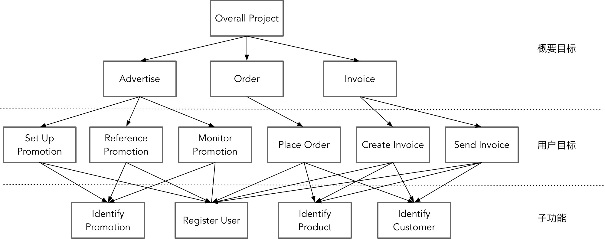
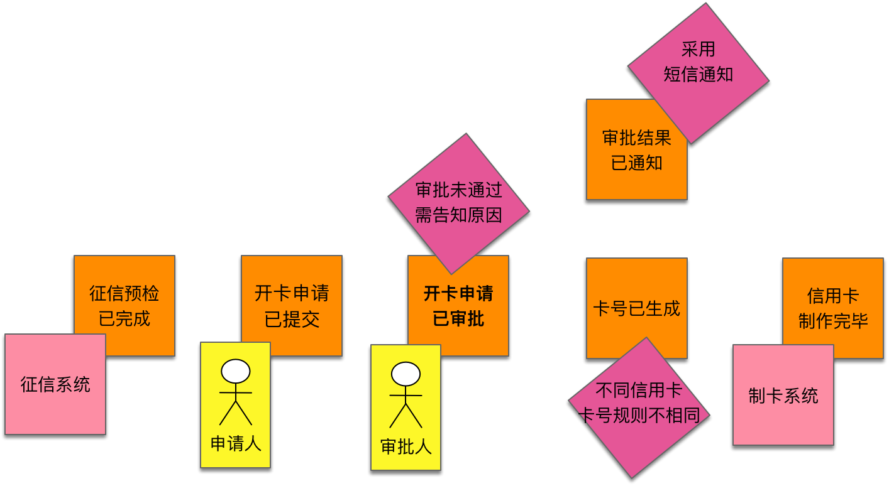
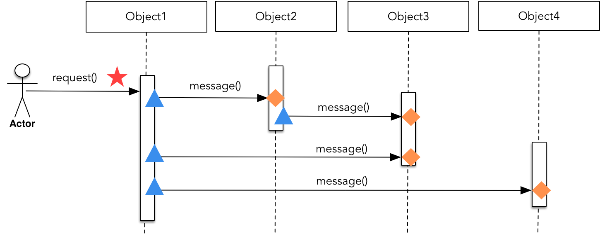
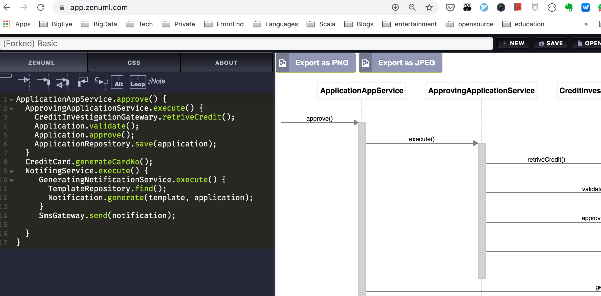

- 001 「战略篇」访谈 DDD 和微服务是什么关系？.md.html
- 002 「战略篇」开篇词：领域驱动设计，重焕青春的设计经典.md.html
- 003 领域驱动设计概览.md.html
- 004 深入分析软件的复杂度.md.html
- 005 控制软件复杂度的原则.md.html
- 006 领域驱动设计对软件复杂度的应对（上）.md.html
- 007 领域驱动设计对软件复杂度的应对（下）.md.html
- 008 软件开发团队的沟通与协作.md.html
- 009 运用领域场景分析提炼领域知识（上）.md.html
- 010 运用领域场景分析提炼领域知识（下）.md.html
- 011 建立统一语言.md.html
- 012 理解限界上下文.md.html
- 013 限界上下文的控制力（上）.md.html
- 014 限界上下文的控制力（下）.md.html
- 015 识别限界上下文（上）.md.html
- 016 识别限界上下文（下）.md.html
- 017 理解上下文映射.md.html
- 018 上下文映射的团队协作模式.md.html
- 019 上下文映射的通信集成模式.md.html
- 020 辨别限界上下文的协作关系（上）.md.html
- 021 辨别限界上下文的协作关系（下）.md.html
- 022 认识分层架构.md.html
- 023 分层架构的演化.md.html
- 024 领域驱动架构的演进.md.html
- 025 案例 层次的职责与协作关系（图文篇）.md.html
- 026 限界上下文与架构.md.html
- 027 限界上下文对架构的影响.md.html
- 028 领域驱动设计的代码模型.md.html
- 029 代码模型的架构决策.md.html
- 030 实践 先启阶段的需求分析.md.html
- 031 实践 先启阶段的领域场景分析（上）.md.html
- 032 实践 先启阶段的领域场景分析（下）.md.html
- 033 实践 识别限界上下文.md.html
- 034 实践 确定限界上下文的协作关系.md.html
- 035 实践 EAS 的整体架构.md.html
- 036 「战术篇」访谈：DDD 能帮开发团队提高设计水平吗？.md.html
- 037 「战术篇」开篇词：领域驱动设计的不确定性.md.html
- 038 什么是模型.md.html
- 039 数据分析模型.md.html
- 040 数据设计模型.md.html
- 041 数据模型与对象模型.md.html
- 042 数据实现模型.md.html
- 043 案例 培训管理系统.md.html
- 044 服务资源模型.md.html
- 045 服务行为模型.md.html
- 046 服务设计模型.md.html
- 047 领域模型驱动设计.md.html
- 048 领域实现模型.md.html
- 049 理解领域模型.md.html
- 050 领域模型与结构范式.md.html
- 051 领域模型与对象范式（上）.md.html
- 052 领域模型与对象范式（中）.md.html
- 053 领域模型与对象范式（下）.md.html
- 054 领域模型与函数范式.md.html
- 055 领域驱动分层架构与对象模型.md.html
- 056 统一语言与领域分析模型.md.html
- 057 精炼领域分析模型.md.html
- 058 彩色 UML 与彩色建模.md.html
- 059 四色建模法.md.html
- 060 案例 订单核心流程的四色建模.md.html
- 061 事件风暴与业务全景探索.md.html
- 062 事件风暴与领域分析建模.md.html
- 063 案例 订单核心流程的事件风暴.md.html
- 064 表达领域设计模型.md.html
- 065 实体.md.html
- 066 值对象.md.html
- 067 对象图与聚合.md.html
- 068 聚合设计原则.md.html
- 069 聚合之间的关系.md.html
- 070 聚合的设计过程.md.html
- 071 案例 培训领域模型的聚合设计.md.html
- 072 领域模型对象的生命周期-工厂.md.html
- 073 领域模型对象的生命周期-资源库.md.html
- 074 领域服务.md.html
- 075 案例 领域设计模型的价值.md.html
- 076 应用服务.md.html
- 077 场景的设计驱动力.md.html
- 078 案例 薪资管理系统的场景驱动设计.md.html
- 079 场景驱动设计与 DCI 模式.md.html
- 080 领域事件.md.html
- 081 发布者—订阅者模式.md.html
- 082 事件溯源模式.md.html
- 083 测试优先的领域实现建模.md.html
- 084 深入理解简单设计.md.html
- 085 案例 薪资管理系统的测试驱动开发（上）.md.html
- 086 案例 薪资管理系统的测试驱动开发（下）.md.html
- 087 对象关系映射（上）.md.html
- 088 对象关系映射（下）.md.html
- 089 领域模型与数据模型.md.html
- 090 领域驱动设计对持久化的影响.md.html
- 091 领域驱动设计体系.md.html
- 092 子领域与限界上下文.md.html
- 093 限界上下文的边界与协作.md.html
- 094 限界上下文之间的分布式通信.md.html
- 095 命令查询职责分离.md.html
- 096 分布式柔性事务.md.html
- 097 设计概念的统一语言.md.html
- 098 模型对象.md.html
- 099 领域驱动设计参考过程模型.md.html
- 100 领域驱动设计的精髓.md.html
- 101 实践 员工上下文的领域建模.md.html
- 102 实践 考勤上下文的领域建模.md.html
- 103 实践 项目上下文的领域建模.md.html
- 104 实践 培训上下文的业务需求.md.html
- 105 实践 培训上下文的领域分析建模.md.html
- 106 实践 培训上下文的领域设计建模.md.html
- 107 实践 培训上下文的领域实现建模.md.html
- 108 实践 EAS 系统的代码模型.md.html
- 109 后记：如何学习领域驱动设计.md.html
- 捐赠
077 场景的设计驱动力
正如 Jon Kern 认为：“不要试着把对象在现实世界中可以想象到的行为都实现到设计中去。相反，只需要让对象能够合适于应用系统即可。对象能做的，所知的最好是一点不多一点不少。”显然，当我们针对企业软件进行领域驱动设计时，不能脱离具体场景进行想当然的设计。领域设计建模是在获得领域分析模型基础之上开展的软件设计活动，究竟该引入怎样的设计要素，领域模型对象之间该如何分配职责，彼此之间如何协作，都应依场景而定。
什么是场景
在领域驱动设计的背景下，场景（Scenario）指的是动态的领域场景，即以一种现实模拟的方式描绘用户如何使用产品特性去达成特定的目标。在场景中，每个角色的行为皆在业务流程的指引下展开活动，并受到业务规则的约束。结合场景进行分析和设计，就不会让我们的设计脱离具体的上下文，避免过度设计，又能借助于场景确认验收标准，设计出恰如其分的符合该场景目标的方案。
场景驱动设计开始于一个初始状态，由主要的参与角色发起，遵循一定的业务流程，完成一个相对独立的功能，最后达到一个最终状态。在描述场景时，可以选择人物角色（Persona）作为场景的起点，通过该角色发起请求，逐步完成该场景下完整功能的交互。因此，场景可以被定义为：具有业务价值的，由参与者触发的，按照时序排列的一系列连续执行的任务过程。
该定义包含了四个关键要素：
- 场景具有业务价值，这决定了场景的粒度和层次
- 场景初始任务的发起者是参与者，包括用户角色、定时规则或外部系统
- 执行的任务过程具有时序性，表明任务是按照顺序依次执行的
- 任务是连续执行的，意味着中间不能有任何需要外界干预才能继续执行的任务
场景的层次
要判断场景的业务价值，需要明确场景的层次。毕竟，站在不同的高度，每个人关心的内容、观察的视角都有所不同。因此，对场景的层次做一次梳理，仍有规范意义。
Alistair Corkburn 在《编写有效用例》一书中将用例分为三个目标层次：概要目标、用户目标和子功能。从某种角度讲，一个用例可以视为一个场景，至少它们的目标是相同的。因此我们可以将这三个目标层次的划分引入到场景中。场景层次越高，越接近系统层面的概念目标；层次越低，越接近具体的业务需求，更加面向终端用户的使用。每个目标层次的场景体现为：
- 概要目标：系统层次的场景划分，每个概要目标可对应子系统的需求目标，体现为领域驱动设计的限界上下文。
- 用户目标：业务层次的场景划分，每个用户目标对应各个子系统所提供的业务价值，体现为领域驱动设计的应用服务。
- 子功能：功能层次的场景划分，每个子功能都对应于业务功能，体现为领域驱动设计的领域模型对象。
Corkburn 给出了如下案例来表现各个目标层次在一个电子商务系统中所处的位置：

位于中间一层的用户目标被 Corkburn 形象地比喻为“海平面”，它是最重要的目标，可以认为是业务需求与系统需求的分界线。只有满足用户目标的场景才体现了业务价值，因此，位于这一层的场景才可以认为是“领域场景”。在事件风暴中，那些参与者参与的决策命令可以视为一个领域场景。这并非巧合，因为参与者（Actor）本身来自用例的概念，一个用例只有与参与者存在“使用（use）”关系时，才被认为有业务价值，换言之，才满足了用户目标。
在设计阶段，采用面向对象范式实现领域场景时，需要多个扮演不同角色的对象履行各自的职责进行协作。职责同样具有层次，由外自内分为：业务价值、业务功能与业务实现。业务价值体现了领域场景要满足的用户目标。为了实现该业务价值，领域场景需要被分解为多个子任务，这些子任务就是支撑业务价值的业务功能。当子任务不可再分时，就对应于业务功能的具体业务实现。不可再分的子任务可称为原子任务，位于原子任务之上的子任务则称为组合任务。下图体现了职责层次与领域场景层次之间的映射关系：
无论职责的层次，还是领域场景的层次，皆非固定的三层结构，对于业务功能而言，只要还没有到具体业务实现的层次，就可以继续分解，组合任务同样如此。设计者需要把握任务的粒度，对场景进行合理的任务分解是设计的关键。
场景驱动设计
领域场景是各个对象一起表演的舞台，站在这个舞台上，每个对象代表了不同的角色，在不同的层次履行不同的职责。由参与者开启一个初始状态，开始执行具有时序性的连续任务，角色之间采用行为协作来共同满足业务价值，这就是场景驱动设计（Scenario Driven Design）。
场景驱动设计之得名，盖因为该方法将领域场景作为了设计的起点。一方面，这强调了任何设计决策皆不能脱离具体的场景；另一方面，领域场景与领域逻辑有关，这一设计驱动力是与领域驱动设计一脉相承的。
场景驱动设计通过结合角色、职责与协作三要素与场景的 6W 模型，即描写场景的过程必须包含的 Who、What、Why、Where、When 与 hoW 这六个要素，形成了动静结合、相辅相成的完整设计方法：
如上图所示，场景驱动设计的关键要素为角色、职责与协作。角色即对象的角色构造型，参与领域场景活动的主要角色包括应用服务、领域服务、聚合与抽象的网关。职责的层次与任务分解相对应，而任务分解的层次又与角色构造型相对应。在完成一个领域场景时，不同角色履行不同层次的职责：
- 应用服务：匹配领域场景，提供满足业务价值的服务接口
- 领域服务：匹配组合任务，协调多个聚合与网关之间的协作，履行提供业务功能的领域行为
- 聚合：匹配原子任务，履行自给自足的领域行为，提供具体的业务实现
- 网关：匹配原子任务，抽象对外部资源的访问，封装具体的技术实现
在当前领域场景的背景下，各个对象角色履行不同层次和粒度的职责。由于场景是由参与者触发的按照时序排列的一系列连续执行的任务过程，因此可以通过时序图表达它们彼此之间的协作方式。把场景与角色、职责、协作结合起来，恰好对应于 6W 模型。以场景作为设计起点，利用任务分解细化场景的业务需求，明确不同层次的职责，并分配给不同角色构造型的对象，结合职责层次通过时序图表现这些对象之间的行为协作。这就是场景驱动设计的全景图。
场景驱动设计的过程
为了简化场景驱动设计，可以将该设计方法固化为一个可按部就班执行的动态设计过程。整个设计过程如下所示：
场景驱动设计的过程分为三个步骤：
- 识别场景：从需求中识别出独立的具有业务价值的领域场景
- 分解任务：根据职责的层次对领域场景进行任务分解
- 分配职责：为领域驱动设计角色构造型分配不同层次的职责
识别场景
认真分析场景的定义，它包含的四个关键要素恰好可与事件风暴相结合。
我们在利用事件风暴识别业务全景时，会判断事件之起因，由此确定事件的参与者：用户角色、策略和外部系统。除外部系统发布的事件，其余事件皆由决策命令触发，故而事件的参与者实质就是决策命令的参与者。若决策命令没有参与者，则说明它对应的事件是前置事件的直接结果，不由外部参与者触发。例如支付完成事件（PaymentProcessed）导致订单完成事件（OrderCompleted）。这时的“订单完成事件”就没有参与者，对应的决策命令“完成订单”自然也没有参与者了。既然有参与者的决策命令可以视为一个领域场景，那么，没有参与者的决策命令就应属于该领域场景下的子任务，属于在一个时序中被连续执行的任务。
说明：这种识别领域场景的方法并非绝对正确，在确定了连续执行的任务时，还要明确这些任务是否都是为了同一个业务价值。如果不是，就需要对领域场景做进一步拆分。
以信用卡申请开卡为例，为事件识别了参与者，其中有两个事件的参与者为外部系统，有两个事件的参与者为不同的用户角色，还有两个事件没有任何参与者，即下图所示的“卡号已生成”事件与“审批结果已通知”事件，它们都是“开卡申请已审批”事件的直接后果：

事件风暴以事件为驱动力可以推导出对应的领域分析模型。在分析模型中，决策命令的参与者应与事件应保持一致。这时，就可通过参与者为分界线，划定领域场景，如下图所示：
“提交开卡申请”决策命令和“审批开卡申请”决策命令分别由申请人与审批人参与，意味着这两个命令并非连续执行，应分属两个不同的领域场景。“生成卡号”决策命令与“通知审批结果”决策命令没有任何参与者，因此考虑将它们与“审批开卡申请”决策命令一起放到同一个领域场景中。至于“征信预检已完成”事件和“信用卡制作完毕”事件的参与者皆为外部系统，故而不纳入这两个领域场景。
在寻找到领域场景之后，我们需要根据其业务价值为领域场景命名。第一个领域场景只有一个决策命令，故而该决策命令就是领域场景的业务价值。第二个领域场景分别执行了审批、生成卡号、通知这三件事情，但从用户目标这一层次来看，其核心价值就是“审批开卡申请”。如果无法为领域场景寻找到合适的体现业务价值的名称，说明识别出来的领域场景可能需要进一步拆分。
分解任务
识别了场景，就规定了场景的参与者和价值，但还不足以获得最后的设计方案。设计时，我们应运用对象范式中的诸多特征，如自治对象、良好协作和合理抽象等应对复杂的业务逻辑。设计是自顶向下的过程，若能通过任务分解形成各个子任务的层级，更有利于我们识别对象，又或者合理地分配职责。
分解任务的过程亦更符合设计者的思维模式。这也正是为何许多初学者更容易编写过程式代码的原因。设计者面对一个识别出来的领域场景去寻找解决方案时，思考的往往不是对象，而是过程。这是一种自然而然的逻辑思维过程。假设我们计划去远方旅行。在确定了旅行目的地和旅行时间之后，我们充满期待地为这次旅行做准备。要准备什么呢？——闭上眼睛想一想，再想一想，浮现在你脑海中的是什么呢？会否就是一系列待完成的任务：
- 确定旅行路线；
- 确定交通工具，例如乘坐飞机，于是——
- 购买机票；
- 查询酒店信息并预订酒店；
- ……
这个思维过程有对象的出现吗？有对象之间的协作吗？是否首先会想到一些对象做什么，另外一些对象做什么？没有，统统没有！在思考这些问题时，是我们自己在给出解决方案。所有的任务都是我们自己去履行。针对该问题域，设计者成了一个“上帝”类，潜意识中，分解出来的任务都由自己来完成。这就是我们的思维模式。
当我们将一个场景拆分为一系列过程式的待办项时，会自然而然以“动宾短语”的格式描述这些拆分好的任务。这些任务不正是职责的一种体现吗？在分解任务时，若能根据职责层次进行逐级拆分，就更加有利于在后续过程确定履行这些职责的对象。分解的任务确实没有主语，然而正是这里成为了结构范式与对象范式的“分水岭”。如果选择上帝类作为执行所有任务的“主语”，就是结构范式中的过程式事务脚本；如果为每个任务都挑选一个细粒度的领域对象，就是对象范式中的领域模型设计。
“组合任务”与“原子任务”的区分较为重要，二者的差异在于粒度。通常而言，原子任务代表了一个基本的领域行为，从聚合的设计原则看，只要是一个聚合能够“自给自足”完成的行为，就可不再继续拆分。聚合内部行为的进一步分解，可以留待领域实现阶段通过代码的重构来完成。部分业务实现的子任务需要访问外部资源，如数据库或第三方服务，此任务也应认为是原子任务，因为对于领域场景而言，访问外部资源的实现皆为技术实现细节，在领域层无需考虑。
分配职责
职责的分配是按照对象的角色构造型进行分配的。在领域模型驱动设计的角色构造型中，与应用逻辑和领域逻辑相关的角色构造型包括：应用服务、领域服务、聚合和网关（包括资源库）。
应用服务对外暴露了应用业务逻辑。在整洁架构中，它属于用例层，这说明应用服务定义的接口应充分体现业务价值，恰与领域场景的用户目标相匹配。应用服务不应包含任何领域逻辑，故而在其内部，会将与领域逻辑相关的行为委派给领域服务。领域服务除了体现为无状态的领域行为外，还负责协调多个聚合以及网关之间的协作，故而是履行组合任务的最佳选择。由于原子任务要么包含基本的业务实现，要么包含对外部资源的访问，因此应选择由聚合和网关角色来履行。聚合内部包含了实体和值对象，在聚合的边界内封装了自给自足的领域行为，使得聚合在履行原子任务时，无需再与聚合外的其他角色构造型协作。
一旦确认了场景与子任务各自的职责承担者，整个设计过程就变成了一个固化的流程：
- 首先，我们选择对应的应用服务，为其定义一个表现业务价值的方法来履行领域场景；
- 然后，以深度优先的方式依次遍历每个子任务；
- 判断当前选中的子任务是否为原子任务，如果不是，就选择领域服务来履行；
- 如果是原子任务，则判断是否访问了外部资源，如果为否，说明该原子任务是自给自足的领域行为，应分配给聚合，从而避免出现贫血模型；
- 如果访问了外部资源，则判断是否访问了数据库，如果是，则由抽象的资源库承担该原则任务，否则交给对应的网关对象。
分配职责的过程是多个对象角色在一定时序下进行协作的过程，因此可考虑引入时序图来可视化彼此间的协作关系。时序图可以直观地体现设计质量，确保对象之间的职责是合理分治的。一些设计坏味道可以很容易在时序图中呈现出来：

如上图所示，时序图呈现的坏味道包括：
- 红色五角星：表示对于一个领域场景而言，对外提供给参与者的方法应该只有一个。若存在多个红色五角星，说明对外的封装不够彻底，可能违背“最小知识法则”。
- 蓝色三角形：表示一个对象会发起对多个对象的调用，如果出现过多的蓝色三角形，则说明该对象要么承担了控制或协调角色，要么说明对象的职责层次不够合理。
- 橙色菱形：表示一个对象定义了一个方法来履行职责，如果出现过多的橙色菱形，则说明该对象履行了太多职责，可能违背“单一职责原则”。
- 时序图的横向宽度：若一个领域场景的时序图太宽，说明有太多的对象参与协作，表示对象的粒度可能太细，增加了代码的复杂度。
- 时序图的纵向高度：若一个领域场景的时序图太高，说明每个对象承担的职责过多，导致对象的粒度太粗，可能违背“单一职责原则”。
显然，对象之间的协作要点在于“平衡”，相比代码而言，时序图可以非常直观地呈现协作关系的平衡度。同时，由于时序图体现了从左到右消息传递的动态过程，这要比静态的领域设计模型更能让设计者发现可能缺失的领域对象。时序图中每个对象的调用时序是非常严谨的，只要消息的传递出现了断层，调用时序就无法继续往下执行，就说明这个协作过程中出现了缺失，启发我们去寻找这个缺失的领域模型对象。这是时序图无与伦比的驱动力。
利用 ZenUML 绘图工具，我们还可以非常方便地将调用时序表现为一种伪代码形式的脚本。在对分解的任务分配职责时，直接用 ZenUML 脚本来展现类名与方法签名。在编写脚本时，工具会实时呈现可视化的时序图，通过所见即所得的方式帮助我们发现设计的坏味道。这些伪代码形式的脚本，亦可以作为领域实现模型有价值的参考。编写的 ZenUML 脚本以及对应的时序图如下所示：

脚本形式的好处在于修改便利，随时可以调整类名与方法签名。脚本的语法接近于 Java 语言，通过大括号可以直观地体现类的层次关系，这种层次关系恰好和任务分解的层次相对应。一旦分解了任务，就可以打开工具，按照场景驱动设计中分配职责的过程，依次为场景、组合任务与原子任务编写脚本。
由于应用服务与领域服务都有相对固定的命名形式，事件风暴的领域分析建模过程又帮我们识别出了聚合与读模型，其中，读模型往往会作为各个领域行为的输入参数。于是，在场景驱动设计的方法体系下，我们有效地融合了事件风暴、领域驱动设计、角色构造型与时序图。另外，不要忘了，分解任务的过程同样是测试驱动开发的重要前提，这就使得场景驱动设计还能搭配测试驱动开发，为下一阶段的领域实现建模奠定了良好的基础。
© 2019 - 2023 Liangliang Lee. Powered by gin and hexo-theme-book.